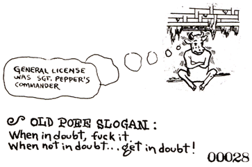

HOW TO START A POEE CABAL
WITHOUT MESSING AROUND WITH THE POLYFOUNDER
If you can't find the Polyfounder, or having found him, don't want anything to do with him, you are still authorized to form your own POEE CABAL and do Priestly Things, using the Principia Discordia as a guide. Your Official Rank will be POEE CHAPLIN for the LEGION OF DYNAMIC DISCORD, which is exactly the same as a POEE PRIEST except that you don't have an Ordination Certificate. The words you are now reading are your ordination.
HOW TO BECOME A POEE CHAPLIN
1. Write the ERISIAN AFFIRMATION in five copies.
2. Sign and nose-print each copy.
3. Send one to the President of the United States.
4. Send one to
The California State Bureau of Furniture
and Bedding
1021 'D' Street, Sacramento CA 94814
5. Nail one to a telephone pole. Hide one. And burn the other. Then consult your pineal gland.
